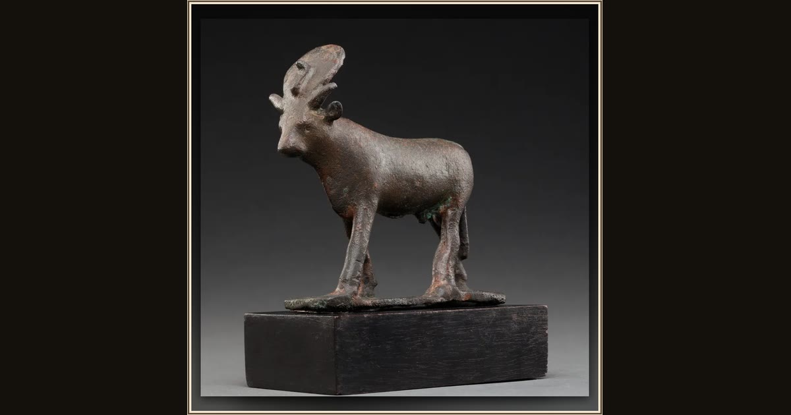

Figure of a Sacred (likely Apis) Bull
Late Period (Saite)–Ptolemaic Period · 664–30 BCE · met
A standing cupreous-metal bull, identified by the museum as likely Apis, recalls the bulls Herodotus says belong to Epaphus and whose purity priests inspect (2.38.1) Explore its place in Herodotus's Histories, Book II, chapter 120.